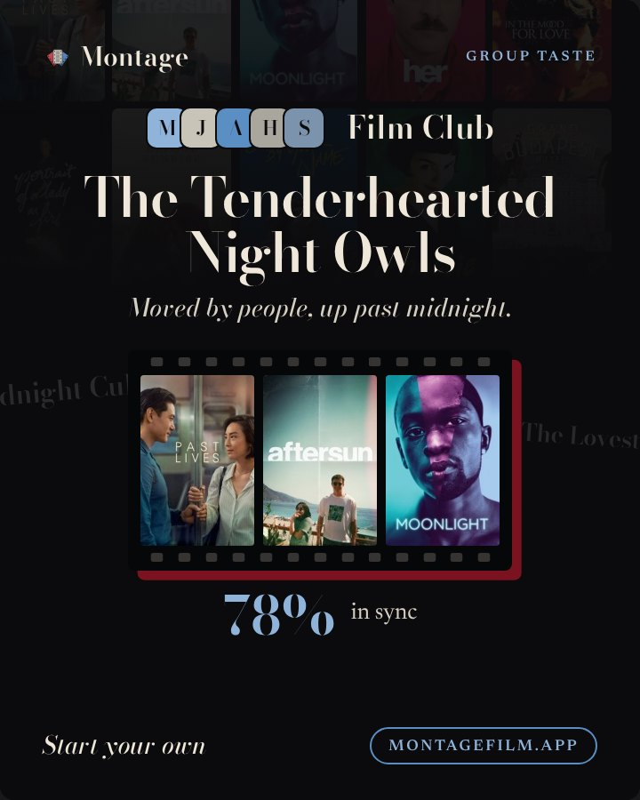
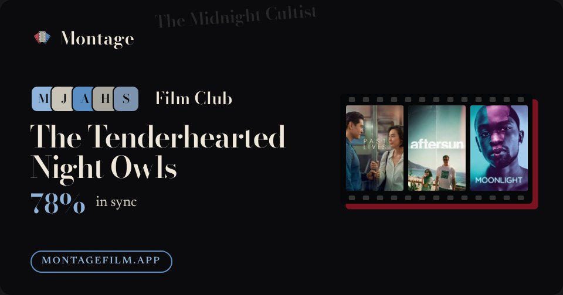

12 · Group taste card
Group taste card
/g/<id>/taste/card · Post 4:5
- Spine replaces the offset under the reel.
- Ghost names stay: the card is the group's archetype.
- The three films plain or on the subtle reel.
spineghost namesplain row
v2

v3 · plain row

Montage
Group taste
MJAHS
Film Club
The Tenderhearted Night Owls
Moved by people, up past midnight.
78%
in sync
Start your own
montagefilm.app
12b · Group taste preview
Group taste preview
/g/<id>/taste/card?size=og · OG
- Spine; the films plain or on the subtle reel; one ghost name kept clear of the text.
spineghost namesplain row
v2

v3 · plain row
Montage
MJAHS
Film Club
The Tenderhearted Night Owls
78%
in sync
montagefilm.app